New Rules
Quantum Circuits, Cellular Automata, Complexity and Chaos
University of Cambridge
July 7, 2022
Conway’s Game of Life
Rules of Life
Each site either dead (0) or alive (1)
Fate of cell determined by eight neighbors
- Any live cell with two or three live neighbours survives
- Any dead cell with three live neighbours becomes a live cell
- All other live cells die in the next generation
Complex behavior!
Cellular Automata
Dynamical systems with discrete space, time, and degrees of freedom
Interesting for statistical physics:
- What kinds of dynamics may occur?
- How does dynamics determine thermodynamic behavior?
Quantum Circuits
A quantum analog of CAs
Basis of “quantum supremacy” work by Google and others
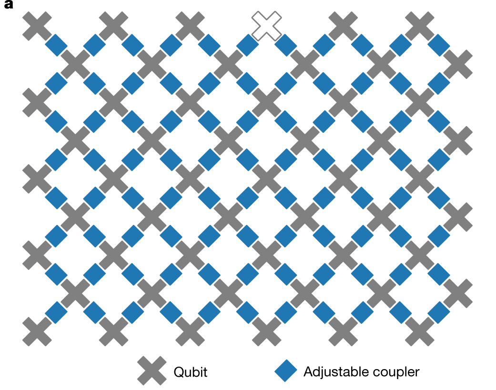
This talk
What are the similarities and differences?
When is quantum dynamics harder?
Little quantum computation per se, though it saturates the field
Elementary cellular automata
“Space” is one dimension with cells \(x_n=0,1\) \(n\in\mathbb{Z}\)
Update cells every time step depending on cells in neighborhood
- Neighborhood is cell and two neighbors for elementary CA
- Update specified by function
\[ f:\\{0,1\\}^3\longrightarrow \\{0,1\\}. \]
\[ x^{t+1}_{n} = f(x^{t}_{n-1},x^{t}_{n},x^{t}_{n+1}) \]
- How many possible functions?
Wolfram’s rules
Domain of \(f\) is \(2^3=8\) possible values for three cells
\(2^8=256\) possible choices for the function \(f\)
List outputs corresponding to inputs: 111, 110, … 000
| 111 | 110 | 101 | 100 | 011 | 010 | 001 | 000 |
|---|---|---|---|---|---|---|---|
| 0 | 1 | 1 | 0 | 1 | 1 | 1 | 0 |
- Interpret as binary number: this one is Rule 110
- Many behaviors, from ordered (Rule 18) to chaotic (Rule 30)
- Rule 110 is capable of universal computation!
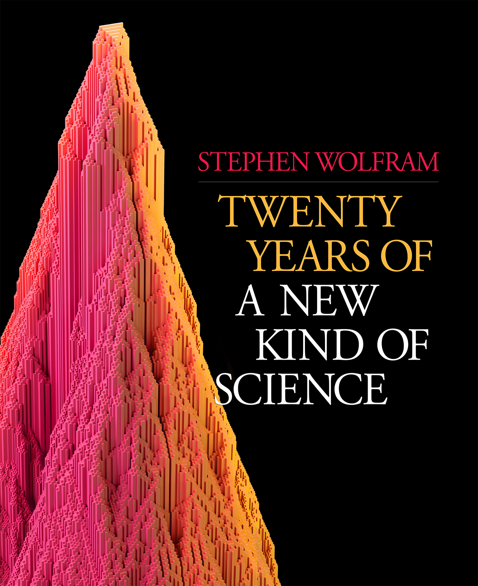
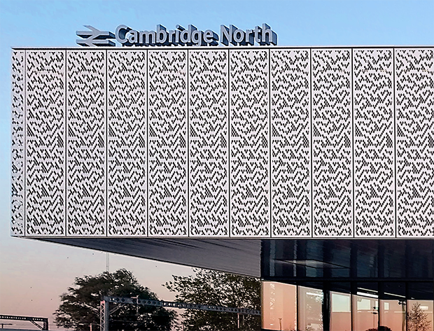
give each pixel a random Pokemon type, and then battle pixels against their neighbors, updating each pixel with the winning type (using the Pokemon type chart)
— Matt Henderson (@matthen2) July 2, 2022
we quickly see areas of fire > water > grass > fire, electric sweeping over, ground frontiers taking over etc etc pic.twitter.com/BHgQuKRApR
CAs as model physics
Notion of a causal “light cone” (45 degree lines)
Variety of possible behaviors: chaos, periodicity, …
Chaos
- Rapid growth of small differences between two trajectories
- Smallest change: flip one site and monitor \(z^t\equiv x^t\oplus y^t\)
Chaos phenomenology
No exponential growth (c.f. Lyapunov exponent in continuous systems)
Track number of differences (Hamming distance) between trajectories
Propagating “front” cannot exceed “speed of light”: generally slower
Theory?
No chance of solving the dynamics of any one CA
Looking for generic properties: natural to consider ensembles
- of initial conditions
- of rules
Probabilistic CA
- Choose rules iid for each site and instant
- Cell values are now white noise
Fluctuations of front are larger and average speed \(<\) maximum
Interesting variation: choose output \(1\) with probability \(p\)
\(p\neq 1/2\) makes dynamics less one-to-one. What happens?
Phase transition
For \(0.25\lesssim p\lesssim 0.75\) front propagates to infinity
Outside this region, front dies out
In finite system two copies always merge after exponentially long time
Markov chain on \(z^t\equiv x^t\oplus y^t\)
- If inputs differ, \(z^{t+1}_n=1\) with probability \(2p(1-p)\) (Derrida and Stauffer (1986))
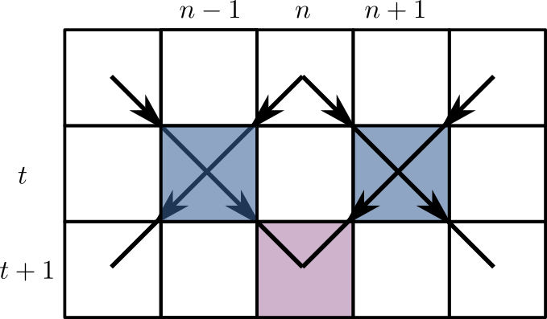
- \(z^{t+1}_{n}=1\) only if at least one of \(z^t_{n\pm 1}=1\)
Seek connected cluster of sites occupied with probability \(x=2p(1-p)\)
This is (site) directed percolation
\(x\leq 1/2< x_\text{crit}\sim 0.706\) on square lattice: require NN neighbors
Reversibility
No elementary CAs are reversible (bijective)!
Reversibility is undecidable above one spatial dimension
\(∃\) reversible constructions
Block cellular automaton
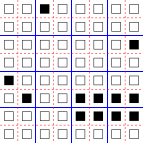
- Partition cells into blocks (Margolus neighborhoods)
- Apply invertible mapping to block
- Alternate overlapping partitions
Spacetime representation
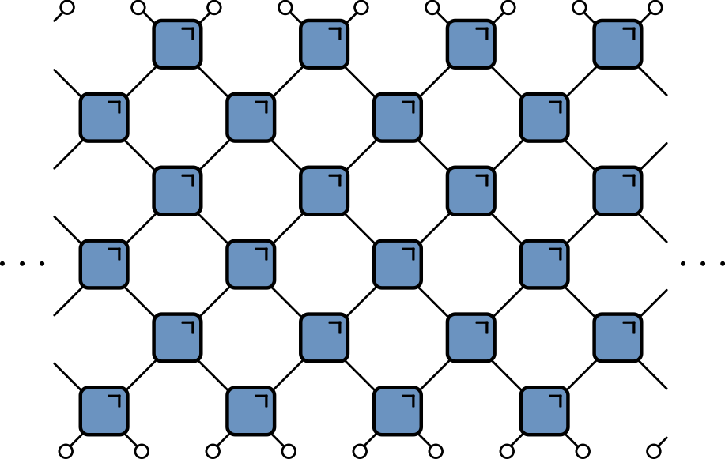
- Blue squares: invertible mapping on states of two sites: 00, 01, 10, 11
24 reversible models
Each block a permutation of 00, 01, 10, 11
\(4!=24\) blocks
Order
- Identity: (1234)
- Swap 10 and 11: (1243)
- Swap 01 and 10: (1324)
- …
Block 3 is the map \((00, 01, 10, 11) ⟶ (00, 10, 01, 11)\)
Exchange, or SWAP gate in quantum information
Reversible vs. irreversible CAs
Ensemble of block CAs
Results qualitatively similar to chaotic phase of of PCA
No phase transition because all blocks are reversible
Dual reversibility
Can we find an ensemble where front propagates at maximal speed?
Yes! Dual reversible blocks are bijections in both time and space
There are 12 such blocks (out of 24)
Ensemble is Markov in time and space: must have maximal velocity!
Mutual information
Disjoint regions \(A\) and \(\bar A\): how much does one tell about the other?
Use mutual information: measure of dependence of random variables
Suggested in this context by Pizzi et al. (2022)
- MI defined as \[
I(X;Y) \equiv S(X) + S(Y) - S(X,Y)
\]
- \(S(X)\) is entropy of \(p_X(x)\); marginal distribution of \(X\)
- \(S(Y)\) is entropy of \(p_Y(y)\); marginal distribution of \(Y\)
- \(S(X,Y)\) is entropy of joint distribution \(p_{(X,Y)}(x,y)\)
- Vanishes if \(p_{(X,Y)}(x,y)=p_X(x)p_Y(y)\)
Simple example
- Suppose either \(X=Y=1\) or \(X=Y=0\), with equal probability
\[ \begin{align} p_{(X,Y)}(0,0)&=p_{(X,Y)}(1,1)=1/2\\ p_{(X,Y)}(1,0)&=p_{(X,Y)}(0,1)=0 \end{align} \]
\[ I(X;Y)=S(X) + S(Y) - S(X,Y)= 1+1-1=1 \text{ bit} \]
Toy model
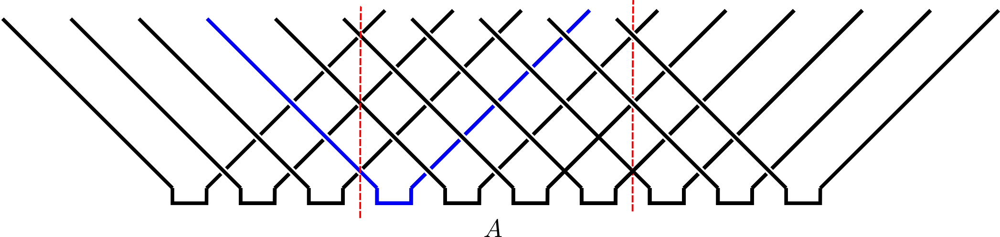
- Initial distribution factorizes over correlated pairs
- Apply SWAPs
- 1 bit MI for every pair with one member in \(A\) and one in \(\bar A\)
\[ I(A;\bar A) = \min(4\lfloor t/2\rfloor, |A|) \text{ bits} \]
- \(|A|\) is (even) number of sites in \(A\)
Comments
Total entropy conserved (c.f Liouville’s theorem)
Entropy of initial distribution is half max, but entropy \(S(A)\) saturates at maximal value (thermalization in time \(\sim |A|/2\))
This model is not so special! Any of the dual reversible blocks CAs behaves exactly the same!
Summary so far
CAs as dynamical systems: chaotic fronts and information dynamics
Dynamical ensembles as a theoretical tool
How can we extend these ideas to quantum systems?
Bits to qubits
| Block CA | Quantum Circuit | |
|---|---|---|
| Basic unit | Invertible map | Unitary operator (gate) |
| Local variable | \(z_n \in \\{0, 1\\}\) | \(\ket{\psi_n}\in \mathbb{C}^2\) |
| Global state | $z \{0,1\}^N $ | \(\ket{\Psi(t)}\in \mathbb{C}^{2^N}\) |
| Simulation | Easy | Hard |
Why consider circuits?
Model of universal quantum computation
Example of discrete time, many body quantum dynamics
Everyone’s doing it!
Unitaries
\(n\)-qubit unitary has matrix elements \(U_{x_1\ldots x_n,x'_1,\ldots, x'_n}\) in computational basis \(\ket{0}\), \(\ket{1}\)
Unitarity means
\[ \sum_{x_1'\ldots x_N'}U_{x_1\ldots x_n,x'_1,\ldots, x'_n} U^\dagger_{x'_1\ldots x'_n,x''_1,\ldots, x''_n}=\delta_{x_1,x_1''}\ldots \delta_{x_N,x_N''}, \]
- But we’d like to avoid such awful looking expressions
Everything’s a tensor!!
- General state of \(N\) qubits is
\[ \ket{\Psi} = \sum_{x_{1:N}\in \{0,1\}^N} \Psi_{x_1\ldots x_N}\ket{x_1}_1\ket{x_2}_2\cdots \ket{x_N}_N \]
Write \(\ket{x_1}_1\ket{x_2}_2\cdots \ket{x_N}_N =\ket{x_1\cdots x_N}=\ket{x_{1:N}}\) for brevity
Operator on \(N\) qubits has matrix elements
\[ \mathcal{O}_{x_{1:N},x'_{1:N}} = \bra{x_{1:N}}\mathcal{O}\ket{x'_{1:N}} \]
Penrose graphical notation

Brickwork unitary circuits

- Have causality built in
- Quantum analog of (block) CAs
Some gates
Work in the basis \(\ket{00}\), \(\ket{01}\), \(\ket{10}\), \(\ket{11}\)
Simplest example: SWAP gate
\[ \operatorname{SWAP}=\begin{pmatrix} 1 & 0 & 0 & 0 \\\ 0 & 0 & 1 & 0 \\\ 0 & 1 & 0 & 0 \\\ 0 & 0 & 0 & 1 \end{pmatrix} \]
- Switches states. Takes product state to product state
\[ \operatorname{SWAP}\ket{10} = \ket{01} \]
Square root of SWAP
\[ \sqrt{\operatorname{SWAP}}=\begin{pmatrix} 1 & 0 & 0 & 0 \\\ 0 & \frac{1}{2}(1+i) & \frac{1}{2}(1-i) & 0 \\\ 0 & \frac{1}{2}(1-i) & \frac{1}{2}(1+i) & 0 \\\ 0 & 0 & 0 & 1 \end{pmatrix}. \]
- Generates entanglement (non product state)
\[ \sqrt{\operatorname{SWAP}}\ket{10} = \frac{1}{2}\left[(1+i)\ket{10}+(1-i)\ket{01}\right] \]
- \(\sqrt{\operatorname{SWAP}}\) and single qubit unitaries are universal gate set
Gate notation
- We need both \(U\)s and \(U^\dagger\)s (e.g. for \(\mathcal{O}(t)=U^\dagger(t)\mathcal{O}U(t)\))
Unitary condition
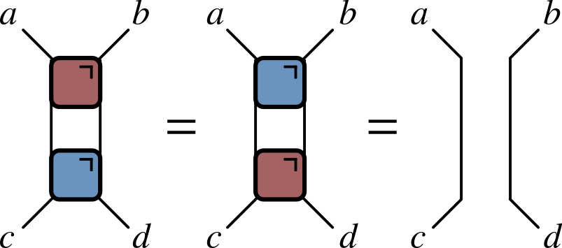
- Much better!
Locality as a feature of real circuits

Hype
- Sampling from circuits basis of Google’s “quantum supremacy”


Computational complexity
Normally matrix-vector multiplication is \(O(\operatorname{dim}^2)=2^{2N}\)
Gates are sparse so \(O(\operatorname{dim})=2^{N}\), but still exponentially hard
For low depth \(T<N\) move horizontally instead
Expectation values
- Evaluate \(\bra{\Psi}\mathcal{O}\ket{\Psi}=\bra{\Psi_0}\mathcal{U}^\dagger\mathcal{O}\mathcal{U}\ket{\Psi_0}\) for local \(\mathcal{O}\)
Folded picture

- After folding, lines correspond to two indices / 4 dimensions
Unitarity in folded picture
- Circle denotes \(\delta_{ab}\)
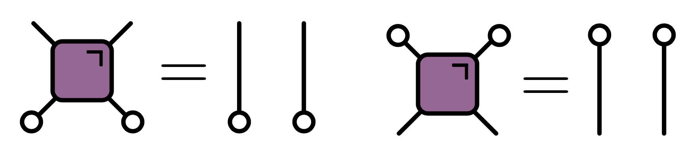
\(\bra{\Psi}\mathcal{O}\ket{\Psi}\) in folded picture
- Emergence of “light cone”
Reduced density matrix
- Expectation values in region \(A\) evaluated using reduced density matrix
\[ \rho_A = \operatorname{tr}_{\bar A}\left[\ket{\Psi}\bra{\Psi}\right]=\operatorname{tr}_{\bar A}\left[\mathcal{U}\ket{\Psi_0}\bra{\Psi_0}\mathcal{U}^\dagger\right] \]
Entanglement entropy
\(\rho_A\) very useful for quantifying entanglement
If \(\ket{\Psi} = \ket{\psi}_A \otimes \ket{\phi}_{\bar A}\) then \(\rho_A = \ket{\psi}_A\bra{\psi}_A\)`
Any deviation from product state leads to mixed density matrix
Quantify by entropy of \(\rho_A\) (the entanglement entropy)
\[ S_A \equiv -\operatorname{tr}\left[\rho_A\log \rho_A\right]. \]
Toy model revisted
Each pair in Bell state \(\ket{\Phi^+}_{2n, 2n+1} = \frac{1}{\sqrt{2}}\left[\ket{0}_{2n}\ket{0}_{2n+1}+ \ket{1}_{2n}\ket{1}_{2n+1}\right]\)
Reduced density matrix for one member: \(\operatorname{tr}_{2}\left[\ket{\Phi^+}_{12}\bra{\Phi^+}_{12}\right] = \frac{1}{2}\mathbb{1}_1\)
Entanglement entropy of 1 bit
For a Bell pair consisting of qubits at sites \(m\) and \(n\):
If \(n\in A\), \(m\in\bar A\), \(\rho_A\) has factor \(\mathbb{1}_n\).
If \(m, n\in A\) they contribute a factor \(\ket{\Phi^+}_{nm}\bra{\Phi^+}_{nm}\) (pure)
Only first case contributes to $ S_A = (4t/2, |A|) $
Just like mutual information in classical version!
Dual unitary gates
- Exactly the same behavior for all unitaries satisfying

c.f. dual reversible CAs
Proof: apply unitary and dual unitary conditions
Converse – maximal entanglement growth implies dual unitary gates – recently proved by Zhou and Harrow (2022)
The dual unitary family
\(4\times 4\) unitaries are 16-dimensional
Family of dual unitaries is 14-dimensional
Includes kicked Ising model at particular values of couplings
Dual unitaries not “integrable” but have enough structure to allow many calculations
Operator spreading
Heisenberg picture: \(Z_n(t)=\mathcal{U}^\dagger(t)Z_n \mathcal{U}(t)\)
Might use \(Z_n(t)\) to evaluate correlation \(\langle Z_n(t)Z_m(0) \rangle\)
How does \(Z_n(t)\) look?
Expansion in operator basis
Expand \(Z_n(t)\) in products of local operators \(X_m\), \(Y_m\), \(Z_m\), \(\mathbb{1}_m\)
Typical term \(\sim \mathbb{1}_1\otimes \cdots X_{8}\otimes Y_{9} \otimes Z_{10}\cdots \otimes\mathbb{1}_N\)
\[ Z_n(t)= \sum_{\mu_{1:N}=\\{0,1,2,3\\}^N} \mathcal{C}_{\mu_{1:N}}(t) \sigma_1^{\mu_1}\otimes\cdots\otimes \sigma_N^{\mu_N},\qquad \sigma^\mu = (\mathbb{1},X,Y,Z) \]
As time progresses two things (tend to) increase:
- The number of sites \(\neq\mathbb{1}\) (known as operator spreading)
- The number of different contributions (or operator entanglement)
Operator spreading closely analogous to chaotic fronts in CAs
Introduce ensemble of random circuits. \(\mathcal{C}_{\mu_{1:N}}(t)\) become random
Fluctuating signs mean \(\langle Z_n(t)Z_m(0) \rangle\) will tend to average to zero
c.f. a single PCA trajectory appears as white noise
Out of time order correlator
\[ \operatorname{OTOC}_{nm}(t) \equiv \langle Z_n(t)Z_m(0)Z_n(t)Z_m(0)\rangle. \]
- In terms of operator expansion
\[ \operatorname{OTOC}_{nm}(t)\propto \sum_{\mu_{1:N}}\mathcal{C}_{\mu_{1:N}}^2(t)\left[\delta_{\mu_m,0}+\delta_{\mu_m,3}-\delta_{\mu_m,1}-\delta_{\mu_m,2}\right]. \]
\(\operatorname{OTOC}_{nm}(t)\neq 1\) when operator \(Z_n(t)\) spreads from site \(n\) to \(m\)
Characteristic speed of propagation is “butterfly velocity” \(v_\text{B}\)
OTOC quantum analog of bitstring differences \(z_t=x_t\oplus y_t\) in CAs.
Google’s OTOC experiment

Quantum advantage?
\(\overline{\operatorname{OTOC}}\) can be expressed as a Markov process
Efficiently calculate using Monte Carlo simulations
Aren’t quantum computers supposed to do things that classical computers find hard?
Averaging is what enables efficient classical algorithms
For a given circuit (no averaging), no probabilistic interpretation
Frontier: measurements
Unitary evolution not the only game in town!
We can also measure, which we expect to reduce entanglement
Consider measurements with certain rate and density in space
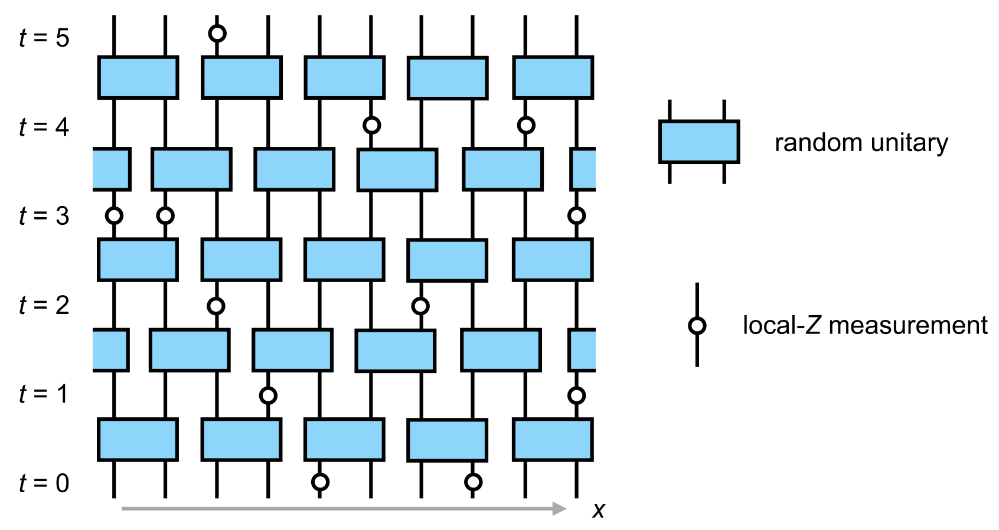
\(∃\) phase transition where entanglement vanishes at finite measurement rate (Y Li, X Chen, MPA Fisher (2019), B Skinner, J Ruhman, A Nahum (2019))
Alternative viewpoint: an initially mixed state is purified by (strong enough) measurements (MJ Gullans, DA Huse (2020))
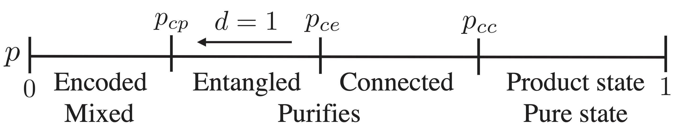
- All states purify, but on exponentially long times below transition
Measurements purify state; analogous to non-injective rules in CA
It was a surprise that a mixed state survives finite measurement rate
But… a chaotic front survives non-injective rules (up to a point)
Summary of analogies
| Cellular Automata | Quantum Circuits | |
|---|---|---|
| Chaos diagonistic | Difference \(z^t=x^t\oplus y^t\) | OTOC \(\langle Z_n(t)Z_m(0)Z_n(t)Z_m(0)\rangle\) |
| Spread of | Mutual information | Entanglement entropy |
| Transition via | Non-injectivity | Measurements |
| Ensemble | Random maps | Random unitaries |
Thanks to Pieter Claeys, Jonah Herzog-Arbeitman, and Sarang Gopalakrishnan for sharing their ideas
Further reading
Links at austen.uk/talks/new-rules
Review on random circuits Andrew Potter, Romain Vasseur (2021)
Transition to chaos in CA closely linked to synchronization of extended chaotic systems